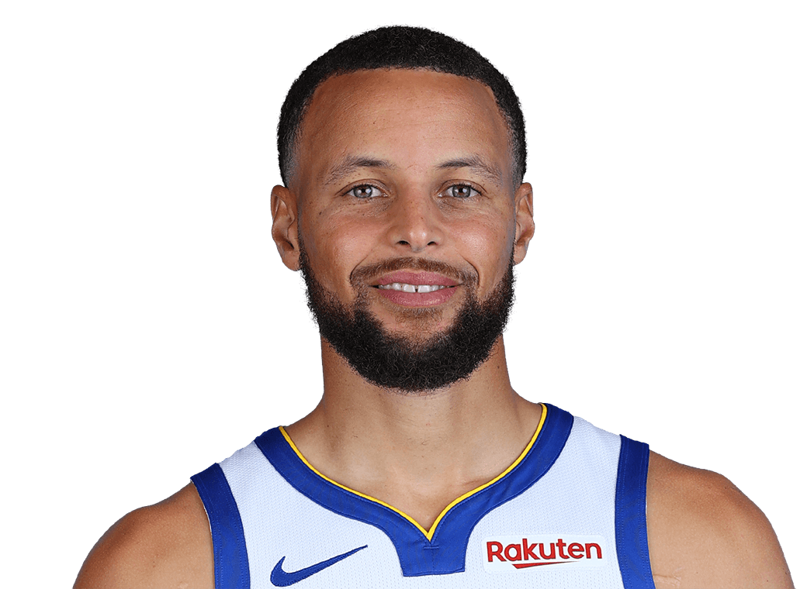
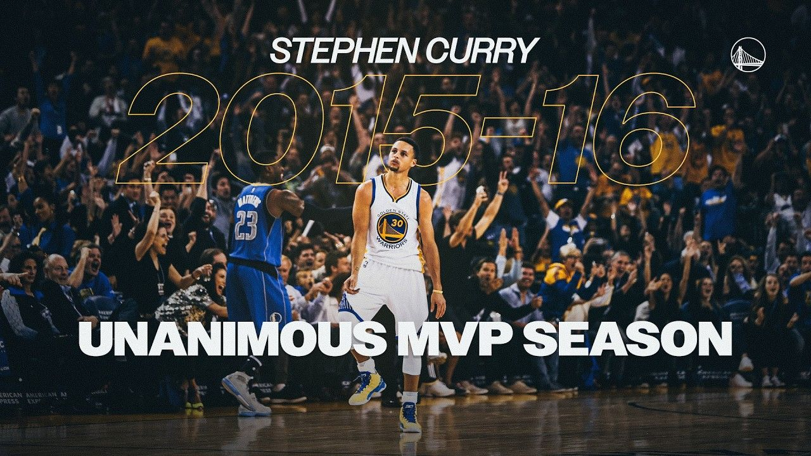
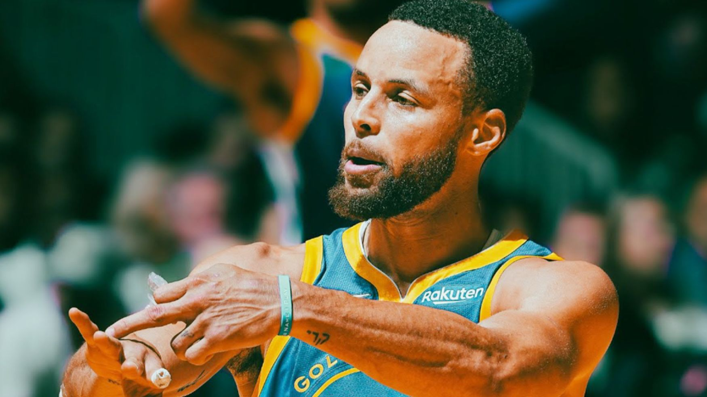

NBA 总冠军
2015、2017、2018、2022 年随金州勇士夺冠。
Career
库里出生于 1988 年，大学时期效力 Davidson Wildcats。2008 年 NCAA 锦标赛中， 他带领 Davidson 打进精英八强，让更多人注意到这个身材并不夸张、却能持续用投射摧毁防线的后卫。
2009 年 NBA 选秀，金州勇士在首轮第 7 顺位选中库里。早期脚踝伤病曾让他的前景被质疑， 但他逐渐把超远三分、快速出手、挡拆处理和无球移动整合成完整的进攻体系。
2014-15 赛季，库里获得个人首个常规赛 MVP，并带领勇士夺冠。2015-16 赛季， 他成为 NBA 历史上首位全票 MVP。2022 年，他带领勇士再次夺冠并获得总决赛 MVP， 也让自己的冠军履历补上了最重要的一块。
Honors
2015、2017、2018、2022 年随金州勇士夺冠。
2015 年首次当选，2016 年成为历史首位全票 MVP。
2022 年总决赛带领勇士击败凯尔特人，获得 FMVP。
长期处于联盟后卫顶级行列，也是全明星舞台的高光制造者。
多次入选 All-NBA，体现出持续多年的顶级影响力。
随美国男篮获得奥运金牌，在国际赛场留下关键投篮瞬间。
Highlights



资料与图片参考： NBA 官方球员页、 金州勇士 Bilibili 集锦